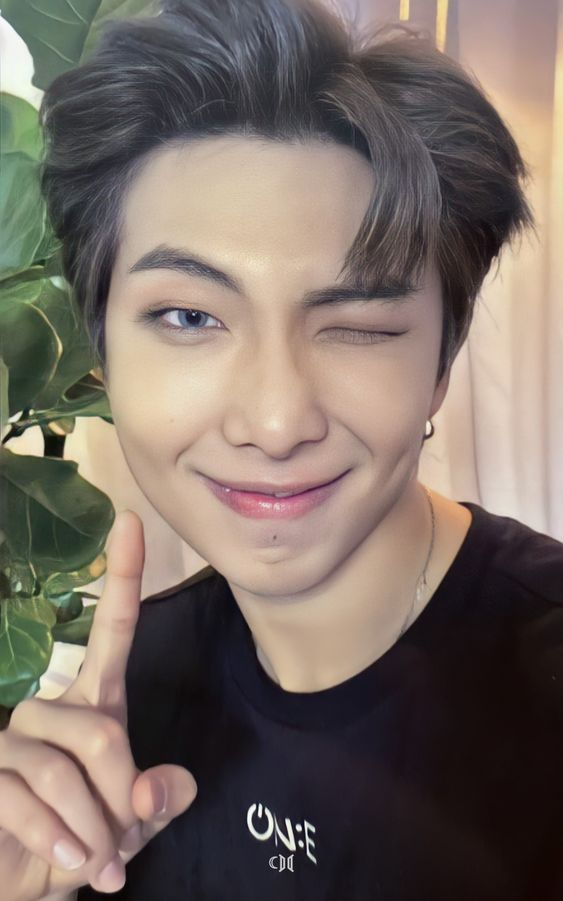
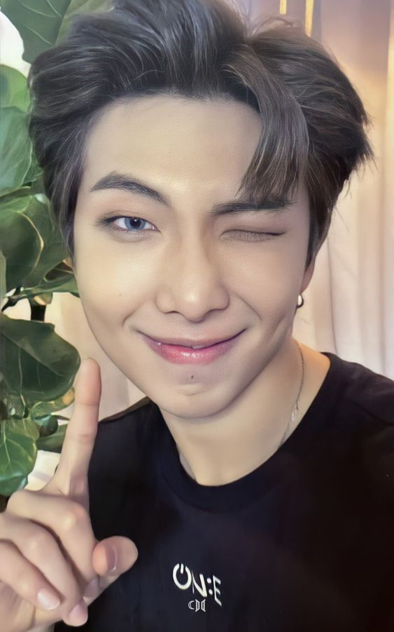

- TAMBIÉN TE INVITAMOS A VER MÁS SOBRE: (HAZ CLICK EN CUALQUIERA DE LAS IMÁGENES QUE SE ENCUENTRAN ABAJO)
Volver a la página principal "BTS 방탄소년단 aquí"
|  RM |  JIN |  J-HOPE |  JIMIN |  TAE HYUN |  JUNGKOOK |
Min Yoon-gi
민윤기
28 años
9 de marzo
1993
Piscis
O
Su nombre de nacimiento es Min Yoon-gi. Su nombre artístico es Suga dentro de BTS, y como solista, se le conoce como Agust D. Es un destacado rapero, letrista y productor dentro del grupo. En el 2016 sacó su primera mixtape como solista, llamada Agust D. Originalmente se unió a Big Hit bajo la idea de convertirse en productor musical. Nació en Daegu, Corea del Sur. Es el hermano más joven de tres. En la escuela secundaria le llamó la atención el rap luego de escuchar el tema Ragga Muffin de Sony Skunk, un dúo de reggae bajo la YG. Luego de descubrir Epik High, decidió convertirse en rapero. A los 13 años ya escribía letras de canciones, y había aprendido a manejar el sistema MIDI. A los 17 trabajó en un estudio de grabación, y para ese momento, comenzó a componer y arreglar música, agregando también su propio rap y presentándose en vivo como rapero underground. Se le conocía como Gloss. Formaba parte de un grupo de hip-hop llamado D-Town. Se unió a Big Hit como productor de música, pero entrenó junto a RM y J-Hope por tres años hasta debutar con BTS en el 2013. Muchos de los temas del grupo también tienen créditos suyos como letrista. Ha compuesto y coproducido más de 120 temas tanto para la banda como para diferentes artistas.
Habla con un acento del dialecto regional llamado satoori al llorar y cuando está nervioso.
Su número favorito es el 3.
Su comida favorita es la carne.
Su color favorito es el blanco.
Le gusta la fotografía.
Durante sus días libres prefiere quedarse sin hacer nada.
Para BT21 de la línea (FRIENDS), el personaje que creó se llama Shooky y es una galleta.
Volver a la página principal "BTS 방탄소년단 aquí"
|  RM | JIN | J-HOPE | JIMIN | TAE HYUN | JUNGKOOK |